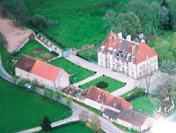
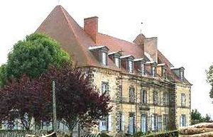
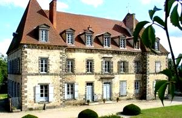
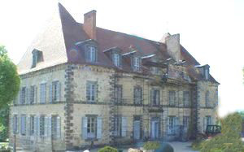

Recensement Jean-Claude Truffet
| Département | 63 — Puy-de-Dôme |
| Canton | Pontaumur |
| Commune | Landogne |
| Type d'édifice | Château |
| Période d'origine | XV-XIX |




Deux châteaux à LANDOGNE, celui de Landogne construit en 1845 par Charles-Jacques Martinat de Chaumont, avait épousé Marie-Adeline Maignol en 1824, héritière de Marie-Joseph Maignol de Neufvaille, leur fille Léoni héritière avait épousé Jacques-Anthème Chapot-Laroche qui hérite et à son décès les biens passent à son amie Léonce Rochettes de Lempes et c'est sa fille Germaine épouse de René Ligier de Laprade qui en hérite et passera à leur fille Yvonne qui à épousé monsieur Soury-Lavergne. Le château a été bâti de 1840 à 1844 par la dernière descendante de la famille Maignols, dynastie de notaires à Landogne, et en 1966 passe par achat à madame Camus avocate, revendu en 1996 à Monsieur Guillot-Malveau qui ces derniers le revendent en 2006 à monsieur Sabatier et à Gérard Nizet. SAUNADE, en 1491, Antoine de Rochedagoux, chevalier, est seigneur de St-Bauzille, le Cheix, Merle, le Puy du Prat et Saunade. Le 6 février 1580, Jacques de Renaud Gaspard Le Loup vend le château à Henri de Montboissier-Beaufort-Canillac. En 1633, les fortifications sont de Beaufort Canillac, chevalier, seigneur de lignat et de Saunade, habite dans son château. En 1698, Eustache de Montboissier-Beaufort-Canillac rend hommage au baron d'Herment pour Saunade. La famille de Val achète, en 1729, la baronnie de Saunade aux Montboissier. En 1789, propriété de monsieur Michel de Val . VIALLEVELOURS, en 1380, la seigneurie est à Bernard de Prondines. Vers 1400, sa fille Marguerite l'apporte par mariage à Guillaume de Chalus, fils de Jean de Chalus, seigneur de Cordès. En 1427, Amblard, seigneur de Viallevelours, fils du chevalier Guillaume de Chalus, épouse Louise de Varvasse. Jusqu'au XVIIIe siècle le château est à une branche de la famille de Chalus. En 1674, propriété de Jean de Chalus. En 1689, Françoise de Pannetier, veuve de Jean de Chalus, et Gabriel de Chalus, sieur de Chalus. En 1693, François-Alexandre de Chalus, écuyer, sieur de Viallevelours, propriétaire du château à Larzat en Chirat-l'Eglise (Allier).
Landogne, bel exemple de château classique construit sous la Restauration, sur des vestiges plus anciens. Ce château est situé au coeur d'un village des Hautes Combrailles, il fut édifié à l'époque de Louis Pilippe dans un style classique. Le château se compose de deux niveaux de sept pièces, chacun coiffé de hautes toitures. La façade principale comporte pas moins de 64 fenêtres. Le parc, en pente douce côté sud, est joliment arboré, doté de trois bassins dont un avec jet d'eau, d'un oratoire, d'un four à pain et d'un cuvier. Une chapelle est actuellement en cours de restauration. L'ancien manoir bâti au XVIe siècle, appartenant à la famille Maignols abrite l'écurie et sa sellerie. Une association a été créée en 2008 afin de le restaurer et y organiser également des animations, soutenir cette association. Saunade; édifié au XVe siècle, à 2,8 km du bourg. Enceinte quadrangulaire à flanquements circulaires d'angle dont un érasé et un donjon circulaire couronné de mâchicoulis et percé de longues canonnières . Tour avec canonnières à rotule. Côté cour, le logis est accosté d'une tour ronde d'escalier, arasée et recoiffée en appentis. Viallevelours; bâti au XIVe siècle, à 1.7 km au nord-ouest du village. Donjon cylindrique arasé à l'angle d'une enceinte quadrangulaire disparue. Logis rectangulaire de deux niveaux à deux travées principales séparées par une travée d'escalier plus étroite. Les fenêtres d'étage sont à appui débordant. Les cheminées sont adossées aux 2 pignons. Sauf la porte, le rez-de-chaussée était aveugle. Les fenêtres conservées ont des modénatures du XVe siècle.
Famille de Marie-Joseph Maignol de Neufvaille Famille de Charles-Jacques Martinat de Chaumont
"
Château de Landogne, de Saunade et de Villevelours.